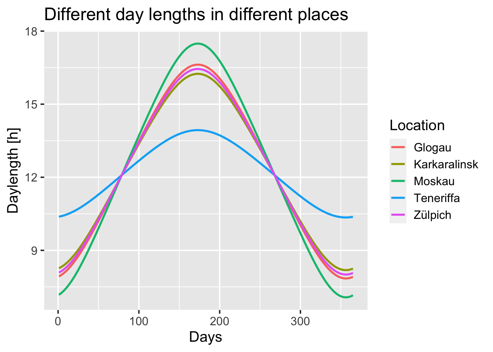
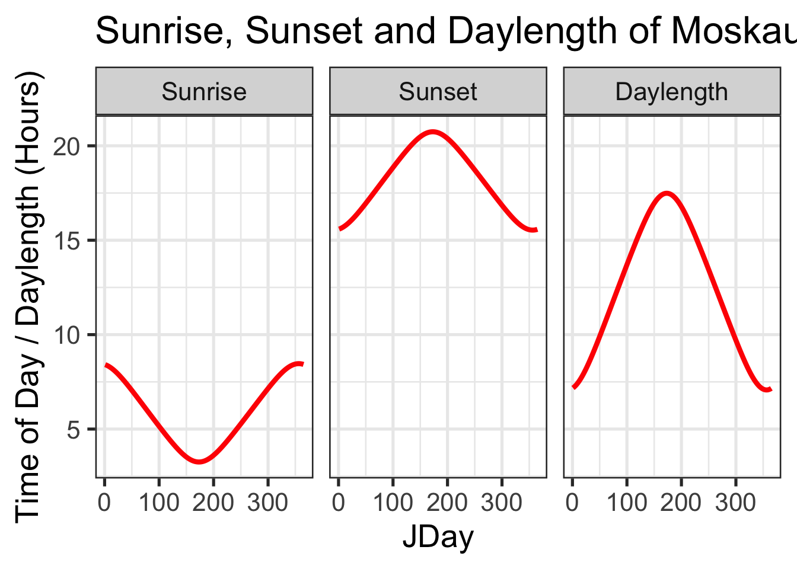
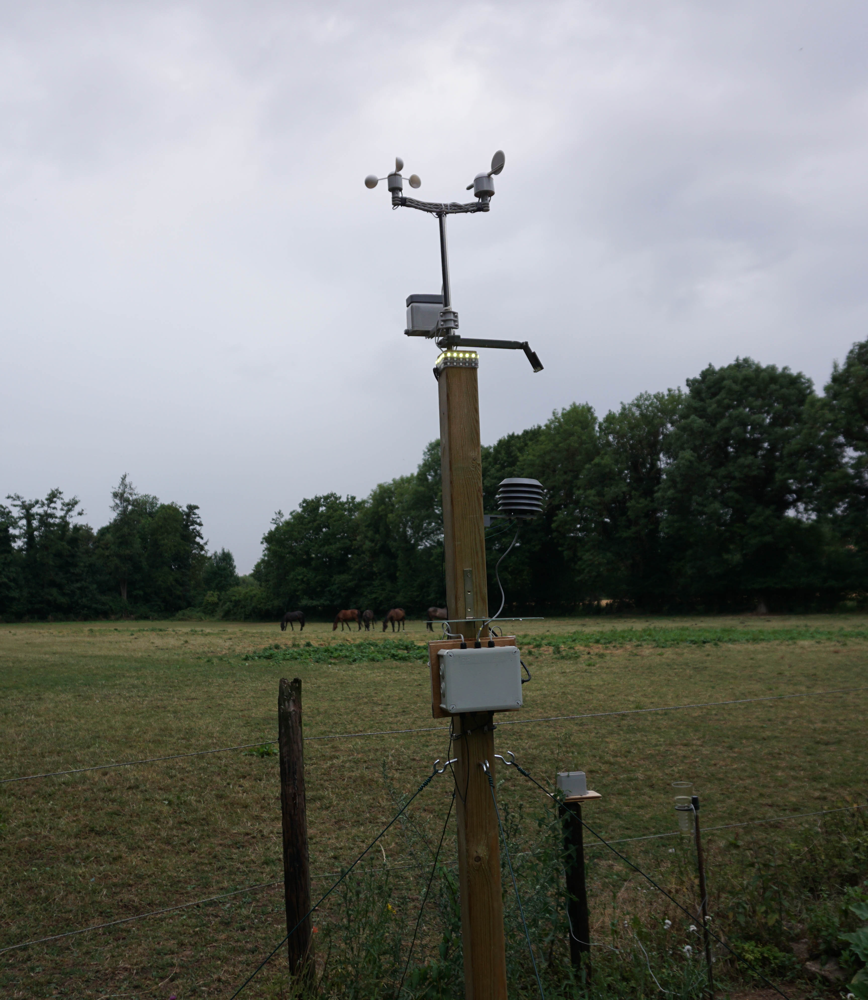
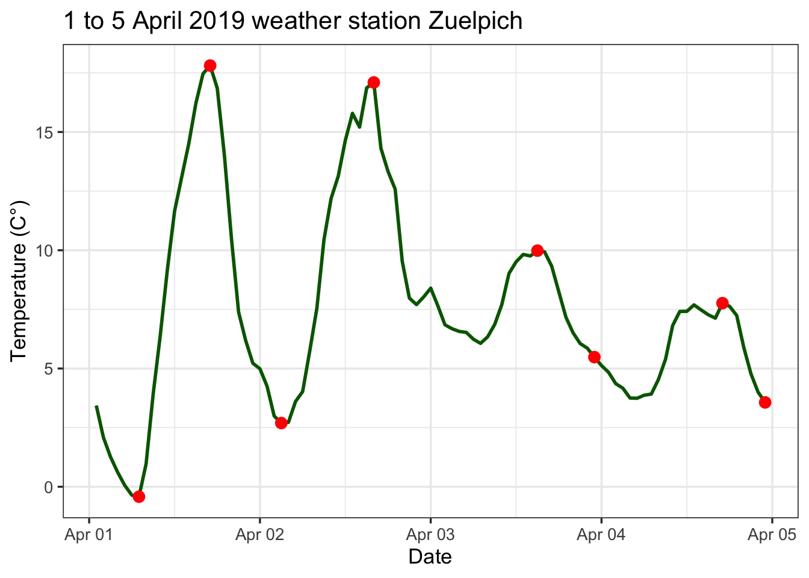
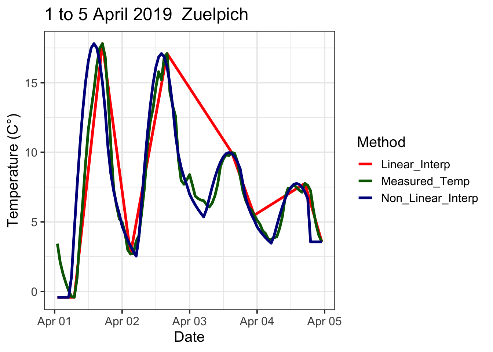

Chapter 7 Making hourly temperatures
7.1 Task 1
Choose a location of interest, find out its latitude and produce plots of daily sunrise, sunset and daylength
First, I would like to compare the lengths of days among locations of interest. I have selected Glogau in Poland, Zülpich in Germany, Tenerife in Spain, Moscow in Russia, and Karkaralinsk in Kazakhstan.
# initialize the variables with daylength, sunrise and sunset by the function daylength
Glogau <- daylength(latitude = 51.40, JDay = 1:365)
Teneriffa <- daylength(latitude = 28.19, JDay = 1:365)
Zuelpich <- daylength(latitude = 50.42, JDay = 1:365)
Moskau <- daylength(latitude = 55.45, JDay = 1:365)
Karkaralinsk <- daylength(latitude = 49.24, JDay = 1:365)
# Create a dataframe consisting of the variables "base" (days 1 to 365) and the
# respective locations and containing only the day length for each location.
df <- data.frame(
base = seq(length(Glogau[[1]])),
Glogau = Glogau[[3]],
Teneriffa = Teneriffa[[3]],
Zülpich = Zuelpich[[3]],
Moskau = Moskau[[3]],
Karkaralinsk = Karkaralinsk[[3]]
)
kable(head(df), caption = "Differnt Locations") %>%
kable_styling("striped", position = "left", font_size = 10)%>%
scroll_box(width = "100%")| base | Glogau | Teneriffa | Zülpich | Moskau | Karkaralinsk |
|---|---|---|---|---|---|
| 1 | 7.930050 | 10.38197 | 8.086864 | 7.175796 | 8.265160 |
| 2 | 7.948054 | 10.38872 | 8.104044 | 7.198073 | 8.281428 |
| 3 | 7.967737 | 10.39612 | 8.122830 | 7.222407 | 8.299217 |
| 4 | 7.989077 | 10.40415 | 8.143199 | 7.248768 | 8.318509 |
| 5 | 8.012048 | 10.41281 | 8.165129 | 7.277120 | 8.339282 |
| 6 | 8.036625 | 10.42209 | 8.188595 | 7.307424 | 8.361515 |
# create a pivot table
df_long <-
pivot_longer(df, -"base", names_to = "Location", values_to = "daylength")
kable(head(df_long)) %>%
kable_styling("striped", position = "left", font_size = 10)%>%
scroll_box(width = "100%")| base | Location | daylength |
|---|---|---|
| 1 | Glogau | 7.930050 |
| 1 | Teneriffa | 10.381965 |
| 1 | Zülpich | 8.086864 |
| 1 | Moskau | 7.175796 |
| 1 | Karkaralinsk | 8.265160 |
| 2 | Glogau | 7.948054 |
# plot the result with ggplot
ggplot(df_long, aes(x = base, y = daylength, groupe = Location)) +
geom_line(aes(color = Location), lwd = 1.0) +
ggtitle("Different day lengths in different places") +
labs(x = "Days", y = "Daylength [h]") + theme_gray(base_size = 15)
Create a summary of the sunrise, sunset, and day length for Moscow.
Days <- daylength(latitude = 55.45, JDay = 1:365)
Days_df <-
data.frame(
JDay = 1:365,
Sunrise = Days$Sunrise,
Sunset = Days$Sunset,
Daylength = Days$Daylength
)
Days_df<-melt(Days_df, id=c("JDay")) Show the final result
ggplot(Days_df, aes(x = JDay, y = value)) + geom_line(lwd = 1.5, color = "red") + facet_grid(cols = vars(variable)) +
ylab("Time of Day / Daylength (Hours)") + theme_bw(base_size = 20) +
ggtitle("Sunrise, Sunset and Daylength of Moskau")
7.2 Task 2
Produce an hourly dataset, based on idealized daily curves, for the KA_weather dataset (included in chillR)
The following two tasks were performed in a modified form. In order to demonstrate the application of the chillR package, it was decided to use a currently active weather station and use its data as a basis. Data on the weather station can be found in the table below. Here is a picture of the weather station:

| Location | State | GPS | Gauß_Krüger |
|---|---|---|---|
| Zuelpich - Fuessenich | North Rhine-Westphalia | 50.69527026369208, 6.615666577711913 | Rechtswert:2543500 Hochwert: 5617798 |
First, corresponding data must be read in. The data are already prepared.
Zuelpich_hourly = read.table(
"weather_data/Weather_Zuelpich_2019_hourly.csv",
header = TRUE,
sep = ","
)
Zuelpich_min_max = read.table("weather_data/Weather_Zuelpich_2019.csv",
header = TRUE,
sep = ",")zuelpich_april = Zuelpich_hourly %>% filter("2019-04-01 00:00:00" < date) %>%
filter("2019-04-05 00:00:00" > date)
zuelpich_april$date_new <- as.POSIXct(zuelpich_april[, 3])
zuelpich_april$date_newnew = as.Date(zuelpich_april[, 3])
kable(head(zuelpich_april), caption = "Dataset: zuelpich_april") %>%
kable_styling("striped", position = "left", font_size = 10)%>%
scroll_box(width = "100%")| X | temperature | date | date_new | date_newnew |
|---|---|---|---|---|
| 1412 | 3.4350000 | 2019-04-01 01:00:00 | 2019-04-01 01:00:00 | 2019-04-01 |
| 1413 | 2.0900000 | 2019-04-01 02:00:00 | 2019-04-01 02:00:00 | 2019-04-01 |
| 1414 | 1.2616667 | 2019-04-01 03:00:00 | 2019-04-01 03:00:00 | 2019-04-01 |
| 1415 | 0.6150000 | 2019-04-01 04:00:00 | 2019-04-01 04:00:00 | 2019-04-01 |
| 1416 | 0.0583333 | 2019-04-01 05:00:00 | 2019-04-01 05:00:00 | 2019-04-01 |
| 1417 | -0.3566667 | 2019-04-01 06:00:00 | 2019-04-01 06:00:00 | 2019-04-01 |
Next, the lows and highs for the corresponding days must be determined from the data set containing hourly data.
final <- zuelpich_april %>%
group_by(Tag = day(date_newnew)) %>%
summarise(
Mittel = round(mean(temperature, na.rm = TRUE), digits = 1),
Tmax = max(temperature),
Tmin = min(temperature)
)
kable(final, caption = "Dataset:Tmean Tmax Tmin")%>%
kable_styling("striped", position = "left", font_size = 10)%>%
scroll_box(width = "100%")| Tag | Mittel | Tmax | Tmin |
|---|---|---|---|
| 1 | 7.7 | 17.810000 | -0.420000 |
| 2 | 9.5 | 17.096667 | 2.693333 |
| 3 | 7.6 | 9.983333 | 5.481667 |
| 4 | 5.7 | 7.763333 | 3.566667 |
Next, the dataset containing hourly temperature values must be extended with a column that will later represent the daily high and low values. First, the new column
Tmax_Tminis filled withNAs. Then the maximum and minimum values are taken from the previously generated datasetfinal. These values are compared with the hourly values. If they match, the maximum or minimum value found is written to the previously created columnTmax_Tmin. In this way, the daily maximum and minimum values are placed in the tablezuelpich_aprilat the same place where they were also measured.
# generate new coloumn with NAs
zuelpich_april$Tmax_Tmin = NA
# match Tmin
for (i in seq(1, nrow(zuelpich_april))) {
for (j in seq(1, nrow(final))) {
if (zuelpich_april$temperature[i] == final$Tmax[j]) {
zuelpich_april$Tmax_Tmin[i] <- final$Tmax[j]
}
}
}
# match Tmax
for(i in seq(1, nrow(zuelpich_april))) {
for (j in seq(1, nrow(final))) {
if (zuelpich_april$temperature[i] == final$Tmin[j]) {
zuelpich_april$Tmax_Tmin[i] <- final$Tmin[j]
}
}
}
kable(zuelpich_april[1:25,], caption = "Dataset: TmaxTminMatch")%>%
kable_styling("striped", position = "left", font_size = 10)%>%
scroll_box(width = "100%")| X | temperature | date | date_new | date_newnew | Tmax_Tmin |
|---|---|---|---|---|---|
| 1412 | 3.4350000 | 2019-04-01 01:00:00 | 2019-04-01 01:00:00 | 2019-04-01 | NA |
| 1413 | 2.0900000 | 2019-04-01 02:00:00 | 2019-04-01 02:00:00 | 2019-04-01 | NA |
| 1414 | 1.2616667 | 2019-04-01 03:00:00 | 2019-04-01 03:00:00 | 2019-04-01 | NA |
| 1415 | 0.6150000 | 2019-04-01 04:00:00 | 2019-04-01 04:00:00 | 2019-04-01 | NA |
| 1416 | 0.0583333 | 2019-04-01 05:00:00 | 2019-04-01 05:00:00 | 2019-04-01 | NA |
| 1417 | -0.3566667 | 2019-04-01 06:00:00 | 2019-04-01 06:00:00 | 2019-04-01 | NA |
| 1418 | -0.4200000 | 2019-04-01 07:00:00 | 2019-04-01 07:00:00 | 2019-04-01 | -0.42 |
| 1419 | 0.9666667 | 2019-04-01 08:00:00 | 2019-04-01 08:00:00 | 2019-04-01 | NA |
| 1420 | 3.9333334 | 2019-04-01 09:00:00 | 2019-04-01 09:00:00 | 2019-04-01 | NA |
| 1421 | 6.4183333 | 2019-04-01 10:00:00 | 2019-04-01 10:00:00 | 2019-04-01 | NA |
| 1422 | 9.2050000 | 2019-04-01 11:00:00 | 2019-04-01 11:00:00 | 2019-04-01 | NA |
| 1423 | 11.6483333 | 2019-04-01 12:00:00 | 2019-04-01 12:00:00 | 2019-04-01 | NA |
| 1424 | 13.0883333 | 2019-04-01 13:00:00 | 2019-04-01 13:00:00 | 2019-04-01 | NA |
| 1425 | 14.5100000 | 2019-04-01 14:00:00 | 2019-04-01 14:00:00 | 2019-04-01 | NA |
| 1426 | 16.2199999 | 2019-04-01 15:00:00 | 2019-04-01 15:00:00 | 2019-04-01 | NA |
| 1427 | 17.4650000 | 2019-04-01 16:00:00 | 2019-04-01 16:00:00 | 2019-04-01 | NA |
| 1428 | 17.8100000 | 2019-04-01 17:00:00 | 2019-04-01 17:00:00 | 2019-04-01 | 17.81 |
| 1429 | 16.8549999 | 2019-04-01 18:00:00 | 2019-04-01 18:00:00 | 2019-04-01 | NA |
| 1430 | 14.0283333 | 2019-04-01 19:00:00 | 2019-04-01 19:00:00 | 2019-04-01 | NA |
| 1431 | 10.4783333 | 2019-04-01 20:00:00 | 2019-04-01 20:00:00 | 2019-04-01 | NA |
| 1432 | 7.3850000 | 2019-04-01 21:00:00 | 2019-04-01 21:00:00 | 2019-04-01 | NA |
| 1433 | 6.1783334 | 2019-04-01 22:00:00 | 2019-04-01 22:00:00 | 2019-04-01 | NA |
| 1434 | 5.2233333 | 2019-04-01 23:00:00 | 2019-04-01 23:00:00 | 2019-04-01 | NA |
| 1435 | 4.9883333 | 2019-04-02 00:00:00 | 2019-04-02 00:00:00 | 2019-04-02 | NA |
| 1436 | 4.2500000 | 2019-04-02 01:00:00 | 2019-04-02 01:00:00 | 2019-04-02 | NA |
After creating a new column containing only the
TmaxandTmintemperatures, a plot can be created that shows the measured temperature history and includes information onTmaxandTmin. The red dots symbolize the daily temperature values forTmaxandTmin, respectively.
ggplot(data = zuelpich_april, aes(x = zuelpich_april[, 4], y = zuelpich_april[, 2])) +
geom_line(size = 1.0, colour = "darkgreen") +
geom_point(aes(y = zuelpich_april$Tmax_Tmin),
colour = "red",
size = 3.0) +
labs(x = "Date", y = "Temperature (C°)") +
ggtitle("1 to 5 April 2019 weather station Zuelpich") +
theme_bw(base_size = 13)
First, the dataset
ZU_weathermust be created. The columnsDATE,Year,Month,Day,Tcontinue, andTemp_interare created. TheTemp_intercolumn contains temperature data with large gaps that must be interpolated between.
ZU_weather = data.frame(
DATE = zuelpich_april[, 4],
Year = as.numeric(substr(zuelpich_april[, 4], 1, 4)),
Month = as.numeric(substr(zuelpich_april[, 4], 6, 7)),
Day = as.numeric(substr(zuelpich_april[, 4], 9, 10)),
Tcontinue = zuelpich_april[, 2],
Temp_inter = zuelpich_april[, 6]
)
kable(ZU_weather[1:8,])%>%
kable_styling("striped", position = "left", font_size = 10)%>%
scroll_box(width = "100%")| DATE | Year | Month | Day | Tcontinue | Temp_inter |
|---|---|---|---|---|---|
| 2019-04-01 01:00:00 | 2019 | 4 | 1 | 3.4350000 | NA |
| 2019-04-01 02:00:00 | 2019 | 4 | 1 | 2.0900000 | NA |
| 2019-04-01 03:00:00 | 2019 | 4 | 1 | 1.2616667 | NA |
| 2019-04-01 04:00:00 | 2019 | 4 | 1 | 0.6150000 | NA |
| 2019-04-01 05:00:00 | 2019 | 4 | 1 | 0.0583333 | NA |
| 2019-04-01 06:00:00 | 2019 | 4 | 1 | -0.3566667 | NA |
| 2019-04-01 07:00:00 | 2019 | 4 | 1 | -0.4200000 | -0.42 |
| 2019-04-01 08:00:00 | 2019 | 4 | 1 | 0.9666667 | NA |
The next step is to use the
interpolate_gaps()function to calculate the missing temperatures betweenTmaxandTmin. The functioninterpolate_gaps()returns a list with two entries. The first entry of the list contains the interpolated values, which can be accessed using$interpor[[1]]. The second entry,$missing, gives information on whether a value needs to be interpolated or if a real value is present. The functioninterpolate_gaps()linearly interpolates between gaps in the temperature records. The interpolated values are written directly to the Temp_inter column using the first list entry created by theinterpolate_gaps()function.
# interpolate between gaps in coloum Temp_inter
ZU_weather$Temp_inter <- interpolate_gaps(ZU_weather$Temp_inter)[[1]]
# have a look at the first 10 entries
kable(ZU_weather[1:10, ]) %>%
kable_styling("striped", position = "left", font_size = 10)%>%
scroll_box(width = "100%")| DATE | Year | Month | Day | Tcontinue | Temp_inter |
|---|---|---|---|---|---|
| 2019-04-01 01:00:00 | 2019 | 4 | 1 | 3.4350000 | -0.420 |
| 2019-04-01 02:00:00 | 2019 | 4 | 1 | 2.0900000 | -0.420 |
| 2019-04-01 03:00:00 | 2019 | 4 | 1 | 1.2616667 | -0.420 |
| 2019-04-01 04:00:00 | 2019 | 4 | 1 | 0.6150000 | -0.420 |
| 2019-04-01 05:00:00 | 2019 | 4 | 1 | 0.0583333 | -0.420 |
| 2019-04-01 06:00:00 | 2019 | 4 | 1 | -0.3566667 | -0.420 |
| 2019-04-01 07:00:00 | 2019 | 4 | 1 | -0.4200000 | -0.420 |
| 2019-04-01 08:00:00 | 2019 | 4 | 1 | 0.9666667 | 1.403 |
| 2019-04-01 09:00:00 | 2019 | 4 | 1 | 3.9333334 | 3.226 |
| 2019-04-01 10:00:00 | 2019 | 4 | 1 | 6.4183333 | 5.049 |
Thus, all gaps in the column
Temp_interare filled by linear interpolation. The interpolation is performed between the gaps.The non-linear interpolation method considers the sun’s position at the respective location in the interpolation. In addition, the
stack_hourly_temps()function requires a dataset as input that only containsTmaxandTminvalues. In this example, this dataset is calledZU_weather_min_maxand consists of five columns:Year,Month,Day,Tmax, andTmin.
# create dataframe for non-linear interpolation
ZU_weather_min_max = data.frame(
Year = as.numeric(substr(Zuelpich_min_max[, 2], 1, 4)),
Month = as.numeric(substr(Zuelpich_min_max[, 2], 6, 7)),
Day = as.numeric(substr(Zuelpich_min_max[, 2], 9, 10)),
Tmax = final[, 3],
Tmin = final[, 4]
)
kable(ZU_weather_min_max[1:10,])%>%
kable_styling("striped", position = "left", font_size = 10)%>%
scroll_box(width = "100%")| Year | Month | Day | Tmax | Tmin |
|---|---|---|---|---|
| 2019 | 2 | 2 | 17.810000 | -0.420000 |
| 2019 | 2 | 3 | 17.096667 | 2.693333 |
| 2019 | 2 | 4 | 9.983333 | 5.481667 |
| 2019 | 2 | 5 | 7.763333 | 3.566667 |
| 2019 | 2 | 6 | 17.810000 | -0.420000 |
| 2019 | 2 | 7 | 17.096667 | 2.693333 |
| 2019 | 2 | 8 | 9.983333 | 5.481667 |
| 2019 | 2 | 9 | 7.763333 | 3.566667 |
| 2019 | 2 | 10 | 17.810000 | -0.420000 |
| 2019 | 2 | 11 | 17.096667 | 2.693333 |
The function
stack_hourly_temps()can be passed the entire datasetZU_weather_min_max. This function sets theTmaxvalues to 6:00 PM and the Tmin values to 6:00 AM, without performing any interpolation between the times when theTmaxandTminvalues actually occurred. The resulting interpolation is written to a new dataset,ZU_hourly. A new column calledDATEis then created in this dataset to store the date, and the first row is removed due to an index shift.
ZU_hourly = stack_hourly_temps(ZU_weather_min_max, latitude = 50.4)
ZU_hourly$hourtemps[, "DATE"] =
ISOdate(
ZU_hourly$hourtemps$Year,
ZU_hourly$hourtemps$Month,
ZU_hourly$hourtemps$Day,
ZU_hourly$hourtemps$Hour
)
ZU_hourly_mod = ZU_hourly[[1]][-1, ]
kable(ZU_hourly_mod[1:10,])%>%
kable_styling("striped", position = "left", font_size = 10)%>%
scroll_box(width = "100%")| Year | Month | Day | Tmax | Tmin | JDay | Hour | Temp | DATE | |
|---|---|---|---|---|---|---|---|---|---|
| 609 | 2019 | 2 | 2 | 17.81 | -0.42 | 33 | 1 | -0.420000 | 2019-02-02 01:00:00 |
| 1217 | 2019 | 2 | 2 | 17.81 | -0.42 | 33 | 2 | -0.420000 | 2019-02-02 02:00:00 |
| 1825 | 2019 | 2 | 2 | 17.81 | -0.42 | 33 | 3 | -0.420000 | 2019-02-02 03:00:00 |
| 2433 | 2019 | 2 | 2 | 17.81 | -0.42 | 33 | 4 | -0.420000 | 2019-02-02 04:00:00 |
| 3041 | 2019 | 2 | 2 | 17.81 | -0.42 | 33 | 5 | -0.420000 | 2019-02-02 05:00:00 |
| 3649 | 2019 | 2 | 2 | 17.81 | -0.42 | 33 | 6 | -0.420000 | 2019-02-02 06:00:00 |
| 4257 | 2019 | 2 | 2 | 17.81 | -0.42 | 33 | 7 | -0.420000 | 2019-02-02 07:00:00 |
| 4865 | 2019 | 2 | 2 | 17.81 | -0.42 | 33 | 8 | 2.355706 | 2019-02-02 08:00:00 |
| 5473 | 2019 | 2 | 2 | 17.81 | -0.42 | 33 | 9 | 6.496980 | 2019-02-02 09:00:00 |
| 6081 | 2019 | 2 | 2 | 17.81 | -0.42 | 33 | 10 | 10.253744 | 2019-02-02 10:00:00 |
Finally, a dataset is generated containing the actual measured temperature data, as well as the interpolated values calculated using both linear and non-linear interpolation. The results can be effectively visualized in a plot.
# final_df = data.frame(
# DATE = zuelpich_april[, 4],
# Measured_Temp = zuelpich_april[, 2],
# Linear_Interp = ZU_weather[, 6],
# Non_Linear_Interp = ZU_hourly_mod[, 8]
# )
#write.csv(final_df, "weather_data/final_df_non_linear.csv")
# read final dataframe
final_df_m = read.table("weather_data/final_df_non_linear.csv",
header = TRUE,
sep = ",")
#remove index
final_df_mx = final_df_m[, -1]
#generate Date
final_df_mx$DATE = as.POSIXct(final_df_mx$DATE)
#create pivot table
final_df_mod = pivot_longer(final_df_mx,
-"DATE",
names_to = "Method",
values_to = "Temperature")
#plot final result and compare methods
ggplot(data = final_df_mod, aes(x = DATE, y = Temperature
, colour = Method)) +
geom_line(lwd = 1.3) +
labs(x = "Date", y = "Temperature (C°)") +
ggtitle("1 to 5 April 2019 Zuelpich") +
scale_color_manual(values = c("red", "darkgreen", "darkblue")) +
#facet_wrap(vars(Method)) +
theme_bw(base_size = 15)